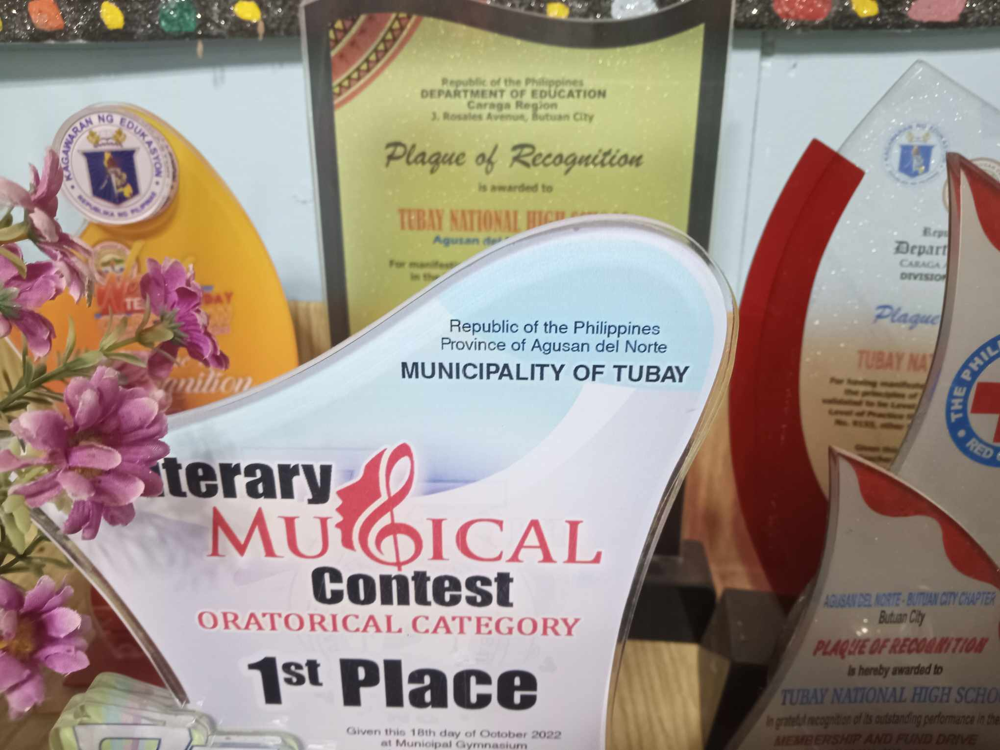
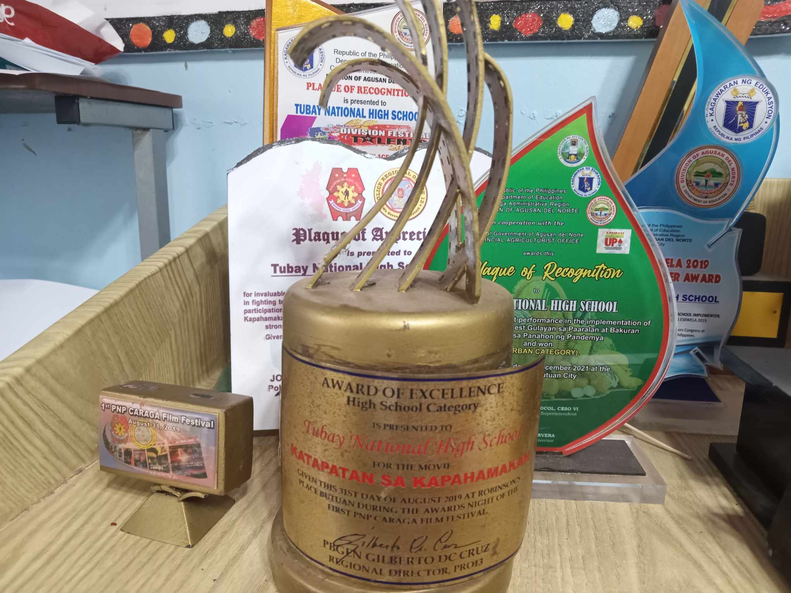
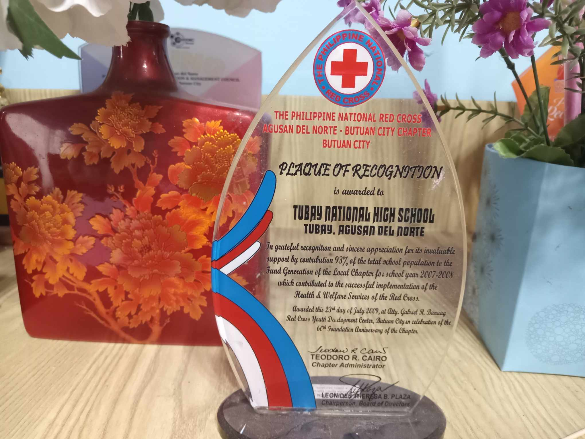

School profiling is essentially primordial in every institutional learning establishment to assess the success and failure in every endeavor on a program the school participates. It will also give feedback to the school administrators toward their performance so that remedial measures can be undertaken within the given span of time.
Tubay National High School is one of the 2 public secondary school in Tubay District I. It is situated in mainland part part of district with a distance of 1 km from the District Office and Tubay Central Elementary school. It is 11km away from the nearest private Elementary anf secondary school and is approximately 41km away from the division office. Tubay National High School is a big school and recognized as SBM Level III(Advaced level) in the Regional level.
The school is guided by the principle, highly responsible, participative, innovative, and above all a conscientious citizen of the country who shows concern for the preservation and conservation of nature and life itself as also a students.
At present, the Tubay National High School is now offering a Senior High School program of STE, with grade 11 as the program.
The Institution is being managed by teaching and non-teaching with permanent status, heades by the school principal of Tubay National High School.
Tubay National High School won the Literary Musical Contest Oratorical Category 1st Place.
Tubay National High School has a award presented for the Katapatan sa Kapahamakan.
Tubay National High School has a award for the philippine national red cross agusan del norte.
